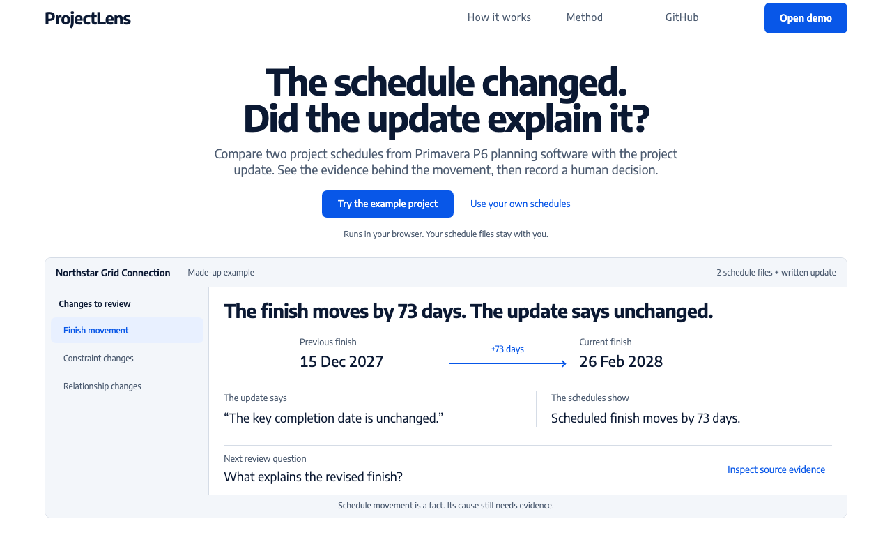
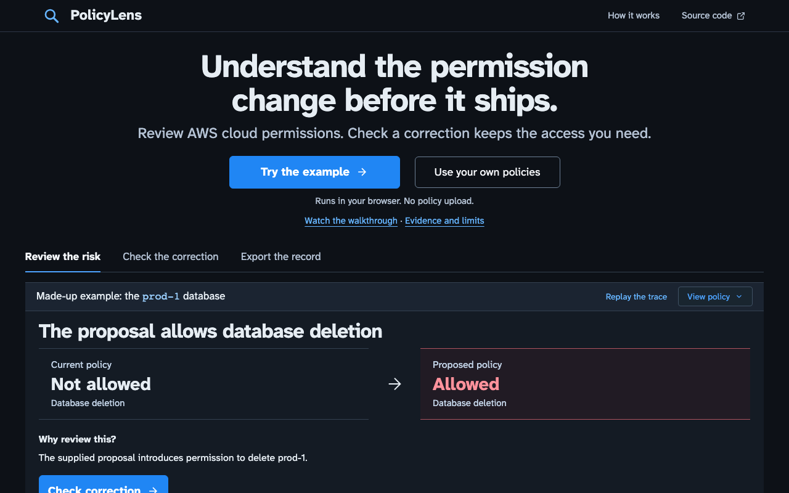
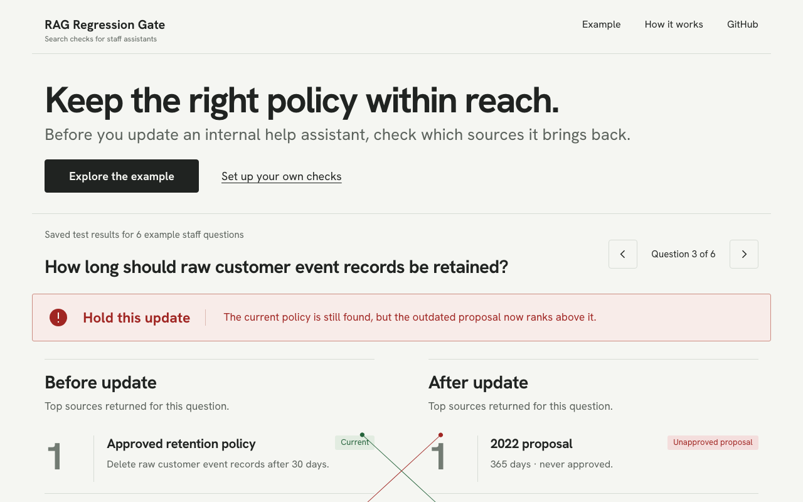

Keep the source beside the answer.
In ProjectLens, a reviewer can follow a moved date back to the schedule entries behind it. That helps them ask a better question. It does not tell them who caused the delay.
Follow the ProjectLens exampleI’m Matthew Paver, an AI solutions architect who still builds the software. I’m an Automation & AI Consultant at Ciklum, placed at Trustpilot, after six years at Projecting Success.

A school requests supply cover, an agency manages the request and assigns a teacher, and the teacher can review the assignment. The separate role-based dashboards share the booking status. This is a recorded case study, not a live staffing service.

Video unavailable. Download the recording or read the case study.
Personal projects you can try in your browser. None of them is client or employer work.

Could a permission change give someone too much access?
A proposed AWS change would let someone delete a production database. PolicyLens shows the line that allows it, checks that a fix removes it without breaking the access people need, and saves a record of the review.
Try it in your browser. It uses a made-up example and nothing is uploaded.
Node.js, AWS IAM, AI evaluation
Does a project update match its schedule?
ProjectLens compares two versions of a project schedule with the written update. It flags dates that moved without explanation, so a reviewer knows what to ask and can record a decision.
Try it in your browser. The example uses a made-up project, so you need no company files.
Browser JavaScript, Python, Playwright

After an update, will an AI assistant still find the right policy?
Many workplace assistants look up documents before they answer. This tool compares the documents they find before and after an update, and holds the update if an old, unapproved document now ranks above the current one.
Try it in your browser. Step through six example staff questions, then download the full report.
Python, search testing, CI

Who is arranging the teacher, and what happens next?
I started with an outdated Liverpool booking process. In this prototype, a school requests cover, an agency assigns a teacher and everyone can follow the booking.
Watch the handoff. The recorded demo follows a request through the separate school, agency and teacher views.
Next.js, TypeScript, Drizzle
I start with the decision someone needs to make, then test the part most likely to mislead them. Here is what that looks like in the work.
In ProjectLens, a reviewer can follow a moved date back to the schedule entries behind it. That helps them ask a better question. It does not tell them who caused the delay.
Follow the ProjectLens examplePolicyLens tests that the AI’s explanation matches the permission result and the policy line it quotes. I wrote these test cases myself, so they do not cover every AWS rule.
Inspect the PolicyLens checksFor the lakehouse’s next-day forecast, the simple guess is “tomorrow will look like today”. I keep future data out of training and say plainly when the model does no better than that guess.
Read the lakehouse evaluationPick what you want to do: try a tool, read how a product was built or reuse working code.
Since November 2025 I have been an Automation & AI Consultant at Ciklum, placed at Trustpilot, where I lead AI and automation projects from discovery to support after launch. Before that I spent six years at Projecting Success, progressing from data analysis through data science into solutions architecture. That path still shapes how I work: understand the decision, check the data, build the system and explain it to the people who will use it.
My experience spans knowledge graphs, AI-assisted workflows and cloud automation, alongside release management, privacy reviews and technical training. I’m interested in what happens after a prototype works: who operates it, how it fails and how people stay in control.
These public projects are independent work. QuickSupply came from an outdated Liverpool supply-teacher booking process; Winchester Buyer Check came from my own home search. They show how I work without exposing employer or client systems.